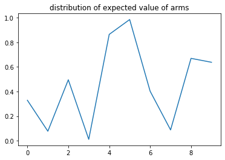

![]()
# Importing numpy for math, and matplotlib for plots
import matplotlib.pyplot as plt
import numpy as np
%matplotlib inlineProblem
Imagine you are at a casino, and you have N slot machines to play, each slot machine gives rewards according to a fixed probability distribution. What strategy should you play with to maximise your total reward ?
This problem is known as Multi Armed Bandit problem.
Arms
An arm when pulled, gives a random number from a normal distribution with fixed mean(mu) and deviation(sigma). When pulled many times the frequency of the rewards look like this:
 X axis is the magnitude of reward
X axis is the magnitude of reward
Y axis is it’s frequency.
The Arm class provides an arm with these properties.
class Arm:
def __init__(self, mu=None, sigma=None):
if mu is None:
self.mu = np.absolute(np.random.uniform())
else:
self.mu = mu
if sigma is None:
self.sigma=np.absolute(np.random.uniform())
else:
self.sigma = sigma
def pull(self):
reward = np.random.normal(self.mu, self.sigma, 1)
return reward
def get_arms(k):
# returns a list of arms
arms = []
for i in range(k):
arms.append(Arm())
return armsAgents
An agent here is a player who pulls arms to play. It has a policy, which is a list of probabilities associated with each arm.
The agent class makes designing agents fast. The object is initialised with arms and whether it should play all arms once as part of the initialisation.
Features provided by this class:
Attributes: * expectations[i]: gives the expected reward on playing arm[i] * times_played[i]: gives the number of times the agent has played arm[i] * N = Total number of times agent has played * reward_history : list of rewards earned by the agent * choice_history : list of choices made by the agent
Methods: * gamble(i): Plays for i iterations while updating it’s policy. * play(i): Pulls arm[i] and updates reward_history, N , times_played * select_arm(): returns index of an arm by sampling probability distribution given by the policy
class agent:
def __init__(self, arms, play_once=1):
self.expectations = np.zeros(len(arms))
self.times_played = np.zeros(len(arms))
self.arms = arms
self.number_of_arms = len(arms)
self.N = 0
self.reward_history = []
self.choice_history = []
if play_once == 1:
for i in range(self.number_of_arms):
self.expectations[i] = self.play(i)
def play(self, index):
reward = self.arms[index].pull()
self.times_played[index] += 1
self.N += 1
self.choice_history.append(index)
self.reward_history.append(reward)
return reward
def policy(self):
pass
def update_expectations(self, reward, index):
self.expectations[index] += (reward - self.expectations[index])/self.N
def select_arm(self):
options = range(self.number_of_arms)
i = np.random.choice(options, p=self.policy(), replace=False)
return i
def gamble(self, iterations):
for i in range(iterations):
index = self.select_arm()
reward = self.play(index)
self.update_expectations(reward, index)Example agents
To make a new agent we inherit the agent class.
Time to make some agents!
First up: epsilon-greedy
This agent plays the arm with the highest expected reward with 1 - epsilon probability, and plays a random arm with epsilon probability
So
epsilon = 1 => random choices
epsilon = 0 => greedy choices
class epsilon_greedy(agent):
def __init__(self, arms, play_once=1, epsilon=0.1):
super().__init__(arms, play_once)
self.epsilon = epsilon
def __str__(self):
return "Epsilon-Greedy Agent, epsilon= "+str(self.epsilon)
def policy(self):
temp = np.zeros_like(self.expectations)
temp[np.argmax(self.expectations)] = 1-self.epsilon
ans = temp + self.epsilon/self.number_of_arms
return ansBeta-Softmax
This agent plays an arm[i] with probability proportional to: e^(expected_reward(arm[i])/beta)
We normalise the whole thing by the sum over all the arms.
class softmax(agent):
def __init__(self, arms, play_once=1, beta=1):
super().__init__(arms, play_once)
self.beta = beta
def __str__(self):
return "Softmax agent, beta= "+ str(self.beta)
def policy(self):
temp = np.exp(self.expectations/self.beta)
ans = temp / np.sum(temp, axis=0)
return ansUpper Confidence Bound (UCB1)
UCB1 agent plays the arm with the highest metric, where metric of arm i is : metric[i] = expected_reward[i] + sqrt(2*log(N)/times_played[i])
Note Best peformance when rewards are between 0 and 1
class ucb(agent):
def __init__(self, arms, play_once=1):
super().__init__(arms, play_once)
def __str__(self):
return "UCB1 agent"
def policy(self):
temp = self.expectations + np.sqrt(2*np.log(self.N)/self.times_played)
ans = np.zeros_like(temp)
ans[np.argmax(temp)] = 1
return ansMetrics
Metric : A scalar number, makes comparison easier.
To compare the performance of our agents we can use these metrics
avg_reward[i] : this gives the average reward till i+1 iteration.
max_reward : this tells us the maximum expected reward
euclid_distance : we can think of as learnt policy and optimal policy as vectors and compute the distance between them , smaller is better
cosine_simmilarity : compute the cos(q) between the policies. larger is better
def maxreward(arms):
#Max rewards
a= [arm.mu for arm in arms]
return max(a)
def avg_reward(rewards):
ans = []
ans.append(rewards[0])
for i in range(1,len(rewards)):
ans.append(ans[i-1]+rewards[i])
for i in range(len(ans)):
ans[i]/=i+1
return ans
def cosine_similarity(a,b):
temp = a*b
temp/=(euclid_distance(a)* euclid_distance(b))
return np.sum(temp, axis=0)
def euclid_distance(a):
return np.sqrt(np.sum(a*a, axis=0))Test
This function takes a list of agents and the number of iterations. Makes each agent play, and prints its metrics.
def test(agents, iterations):
for agent in agents:
agent.gamble(iterations)
temp = [ arm.mu for arm in levers]
optimal_policy = np.zeros_like(agent.expectations)
optimal_policy[temp.index(max(temp))] = 1
avg_rewards_earned = avg_reward(agent.reward_history)
print(agent)
print("maximum possible reward:", maxreward(levers))
print("average reward:", avg_rewards_earned[-1])
print("cosine similarity" ,cosine_similarity(agent.policy(), optimal_policy))
euclid_norm = euclid_distance(agent.policy()-optimal_policy)/len(optimal_policy)
print("euclidian norm ",euclid_norm)
plt.plot(avg_rewards_earned)
plt.ylabel('Average Reward')
plt.xlabel('Iteration')
plt.show()
print("\n")
# print("optimal policy:" , optimal)
# print("learnt policy:" ,agent.policy())
# plt.scatter(range(len(agent.choice_history)),y=agent.choice_history)
# plt.title("Choices")
# plt.xlabel("time")
# plt.ylabel("arm")
# plt.show()
# print("\n")
levers = get_arms(10)
agents = [
epsilon_greedy(levers, epsilon=1),
epsilon_greedy(levers, epsilon=0),
softmax(levers, beta=0.1),
ucb(levers)
]plt.plot([ arm.mu for arm in levers] )
plt.title("distribution of expected value of arms")Text(0.5, 1.0, 'distribution of expected value of arms')
test(agents, 5000)Epsilon-Greedy Agent, epsilon= 1
maximum possible reward: 0.9851042878107023
average reward: [0.47962497]
cosine similarity 0.3162277660168379
euclidian norm 0.09486832980505139
Epsilon-Greedy Agent, epsilon= 0
maximum possible reward: 0.9851042878107023
average reward: [0.98686237]
cosine similarity 1.0
euclidian norm 0.0
Softmax agent, beta= 0.1
maximum possible reward: 0.9851042878107023
average reward: [0.91348264]
cosine similarity 0.9992727823574249
euclidian norm 0.008915931500017809
UCB1 agent
maximum possible reward: 0.9851042878107023
average reward: [0.89258379]
cosine similarity 0.0
euclidian norm 0.1414213562373095

Experimental stuff:
Below are a few agents I wrote for fun.
class softmax_with_exponentiation(agent):
def __init__(self, arms, play_once=1, beta=1, exp=1):
super().__init__(arms, play_once)
self.beta = beta
self.exp = exp
def policy(self):
temp = np.exp(self.expectations/self.beta)
ans = temp / np.sum(temp, axis=0)
ans = ans**self.exp
ans /= np.sum(ans, axis=0)
return ans
class softmax_with_reccurence(agent):
def __init__(self, arms, play_once=1, beta=1):
super().__init__(arms, play_once)
self.old_policy = np.ones_like(self.expectations)/self.l
self.beta = beta
def policy(self):
temp = np.exp(self.expectations/self.beta)
new_policy = temp / np.sum(temp, axis=0)
result = np.multiply(new_policy, self.old_policy)
result /= np.sum(result, axis=0)
self.old_policy = result
return result
class greedy_with_reccurence(agent):
# alpha = number < 1; will sum over a number of observations and will keep
# osiclating.
# alpha = N will allow the algo to converge to an arm, greedy doesn't
# really need this, kind of always give one answer.
def __init__(self, arms, play_once=1, alpha=1):
super().__init__(arms, play_once)
self.old_policy = np.ones_like(self.expectations)
self.alpha = alpha
def policy(self):
new_policy = np.zeros_like(self.expectations)
new_policy[np.argmax(self.expectations)] = 1
new_policy = (1-self.alpha)*new_policy + self.alpha*self.old_policy
new_policy /= np.sum(new_policy, axis=0)
self.old_policy = new_policy
return new_policy
# class magic(agent):
# def __init__(self, arms, play_once=1, exp=1):
# super().__init__(arms, play_once)
# self.old_policy = np.ones_like(self.expectations)/self.l
# self.exp = exp
#
# def policy(self):
# new_policy = f(old_policy, g(expectations))